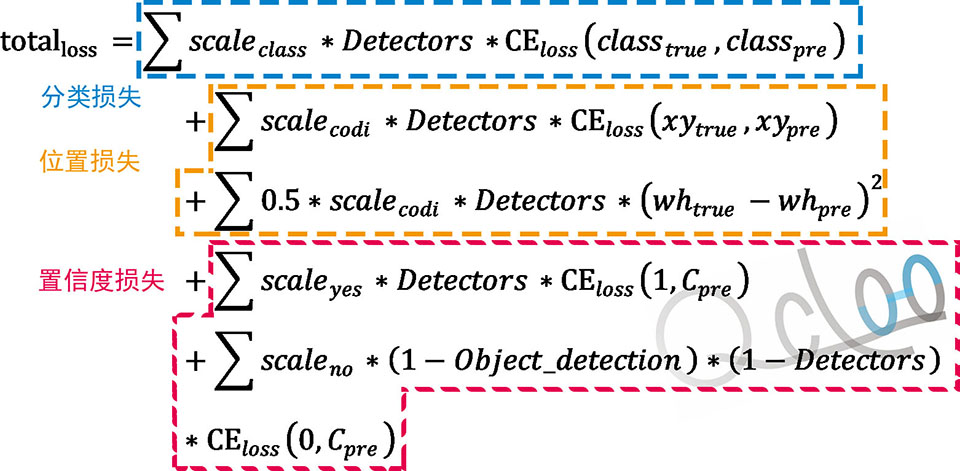
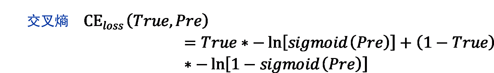
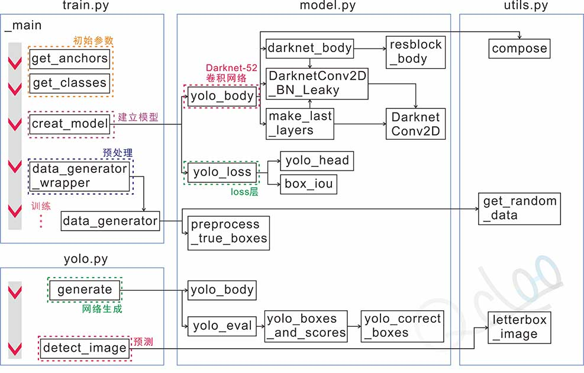

目标检测: YOLOv3笔记(简略)
YOLOv3在v2的基础上进行多处修改，下面仅给出更改点，其它请参照YOLOv2的笔记
1.扩展卷积模型深度，融合resnet基础分类网络以及多尺度预测(FPN)，共有三个尺度
2.锚箱数量变更，v3的每个尺度各有3个锚箱，共9个
3.误差计算采用交叉熵
4.分类采用sigmoid曲线
一. YOLOv3基础模型—Darknet52

*引用自[3]
二. YOLOv3的损失计算
 三. 实现过程
参考文献
[0] 源代码; 同keras-yolo3
[1] keras-yolo3; https://github.com/qqwweee/keras-yolo3
[2] YOLO: Real-Time Object Detection; https://pjreddie.com/darknet/yolo/
[3] 目标检测：YOLOv3: 训练自己的数据; https://blog.csdn.net/lilai619/article/details/79695109
[4] YOLO v3网络结构分析; https://blog.csdn.net/qq_37541097/article/details/81214953
[5] 笔记五——YOLOv3 tensorflow 实现; https://blog.csdn.net/IronMastiff/article/details/79940118?utm_source=blogxgwz16